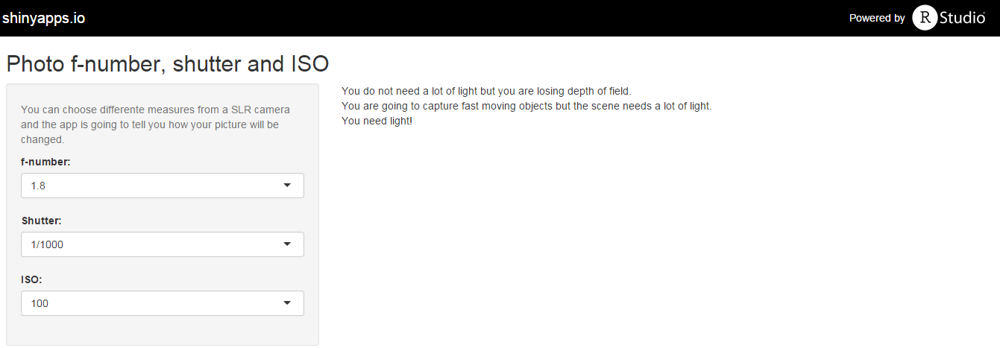

In photography, you have three controls in your camera:
- Diaphragm.
- Shutter speed.
- ISO sensitivity.
Edna Gabriela Hernandez Islas
In photography, you have three controls in your camera:
The diaphragm is measured by the f-number.
The f-number represents how open is the diaphragm and how much light will go through the lens.
As the number increases, the quantity of entering light decreases and the depth field also decreases.
The shutter speed is how long the camera will let the light go through the lens.
As long as the shutter is open, more light will pass. But the camera has to be in an stable tripod or the picture will bu blurred.
When the shutter opens and closes fast, less light will pass but the moving objects will be captured in the image.
When the cameras needed film, the sensitivity the film was determined by the ISO measure.
Greater the ISO measure, greater the sensitivity to light. But with this, the picture gain more grain.
The app will tell you how changing parameters will affect your photography.
You can change the parameters with the most commons levels.
